Role: Interaction Designer
Timeline: Concept Project
Tags:
AI
Systems
Dashboard
ML/AI
Problem Statement
Warehouse managers and supervisors can't get actionable insights on the isolated data provided by Control Tower as it uses static models, limited data, and no recommendations.
To address this, we aim to develop a feature leveraging artificial intelligence, machine learning and advanced analytics to offer actionable insights and recommendations.
How does ML/AI come into the picture?
ML/AI can help answer questions like:
- Which products should I re-slot to improve overall efficiency?
- If I move three more workers to Zone A, will I get my orders shipped on time?
The Team
Design Team - 1 Interaction Designer (Me), 1 Visual Designer
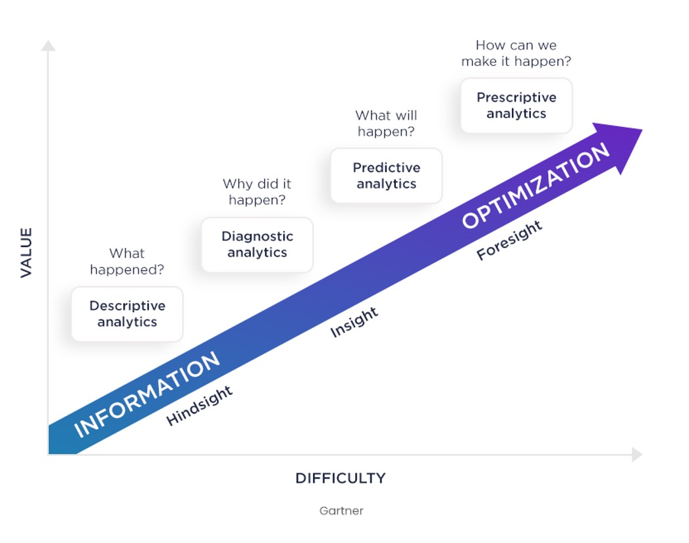
Market Research
{isMarketResearchOpen ? ( ) : (Ataccama
- Uses AI to assess data quality, surface inconsistencies, and generate contextual insights directly tied to specific issues in the workflow.
- Provides smart summaries with recommended actions, allowing users to drill into dedicated pages to investigate and resolve problems.
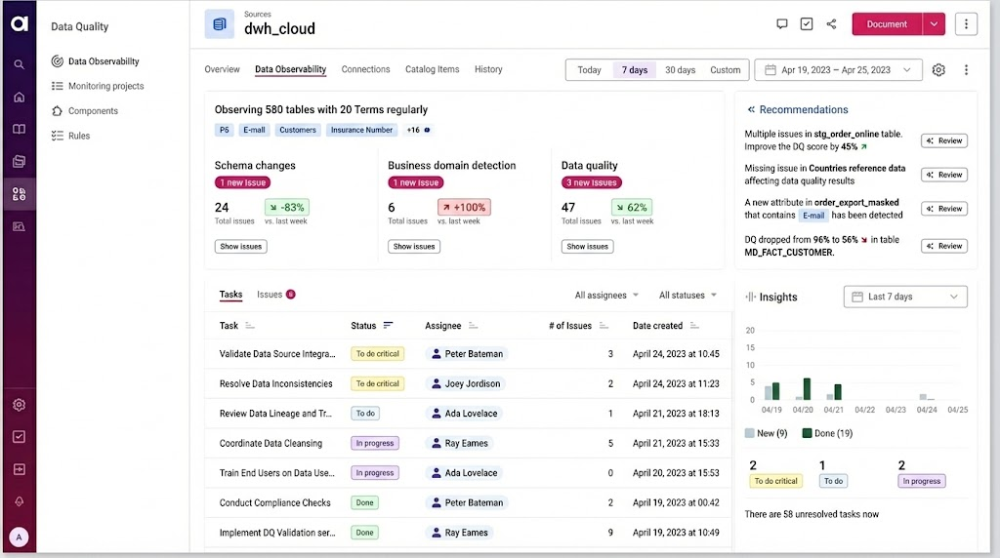
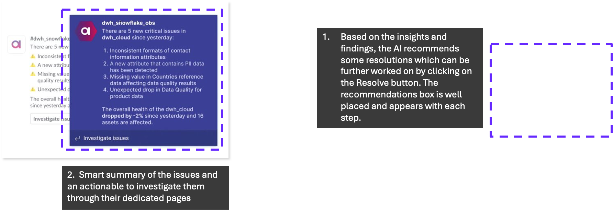
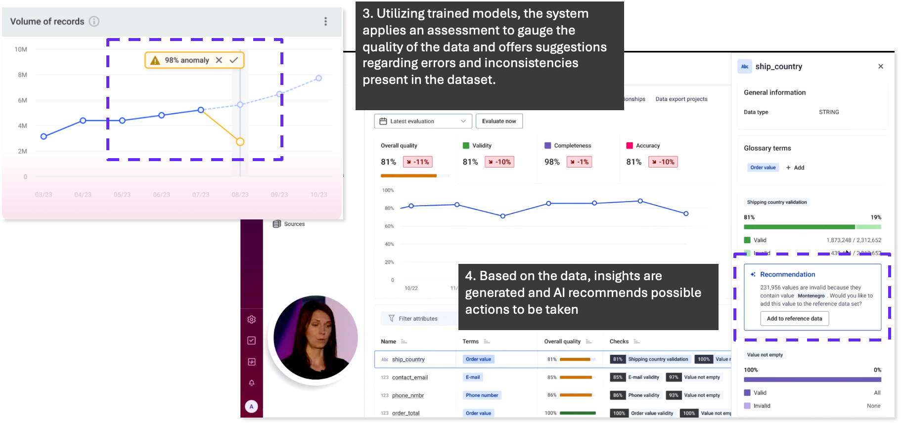
AWS Supply Chain
- Automatically generates real-time insights on supply chain risks like overstock and stock-outs using unified data from the supply chain data lake.
- Suggests recommended actions with projected outcomes and confidence scores, supported by a real-time visual map of inventory health across locations.
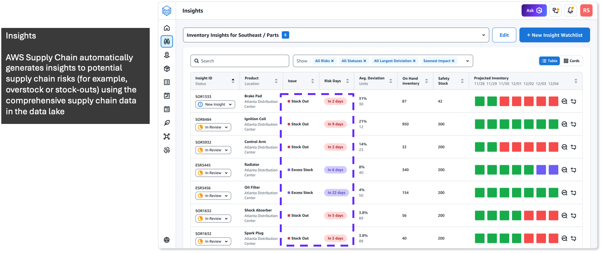
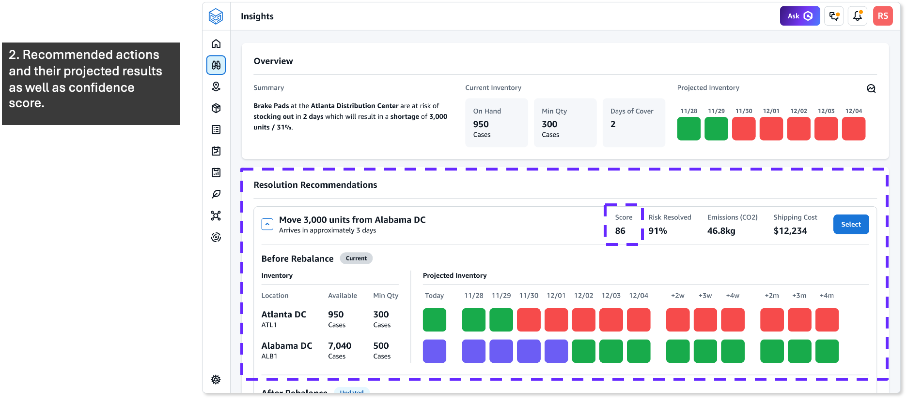
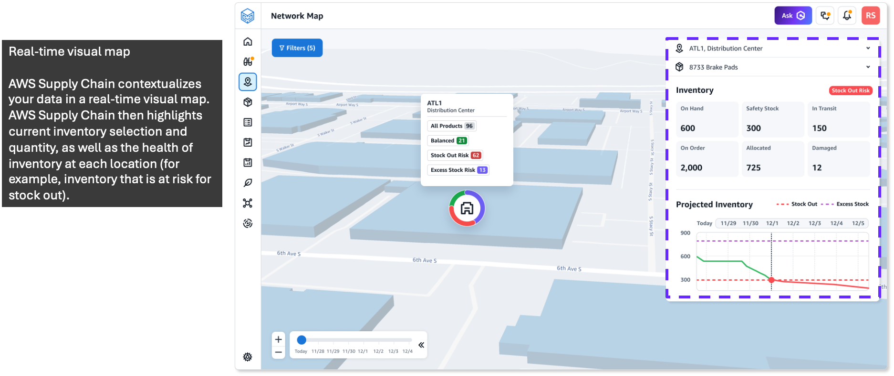
Tredence
- Delivers contextual recommendations by combining internal operational data with external signals such as weather, geopolitical factors, and demand trends.
- Prioritizes alerts and demand forecasts across multiple information channels to help users select the most relevant and impactful actions.
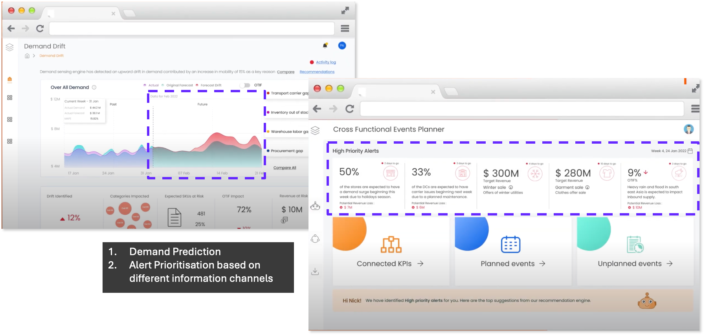
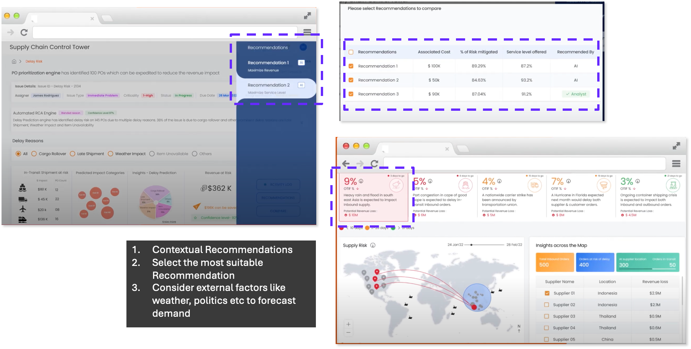
Finalized Features
Features Overview
- AI-driven insights and recommendations appear contextually wherever losses, errors, or anomalies are detected.
- Each insight includes a concise explanation along with actionable options to address the issue immediately.
- Dashboard widgets can be analyzed individually, generating recommendations specific to the metric or trend shown.
- This approach keeps insights relevant, reduces cognitive load, and enables faster decision-making within the existing workflow.
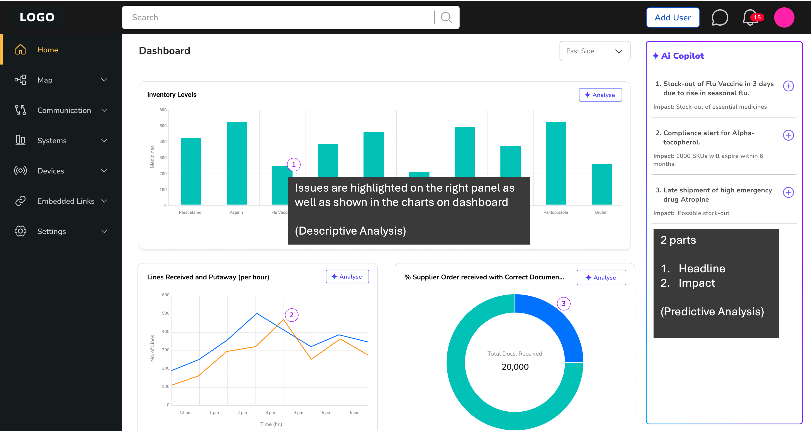
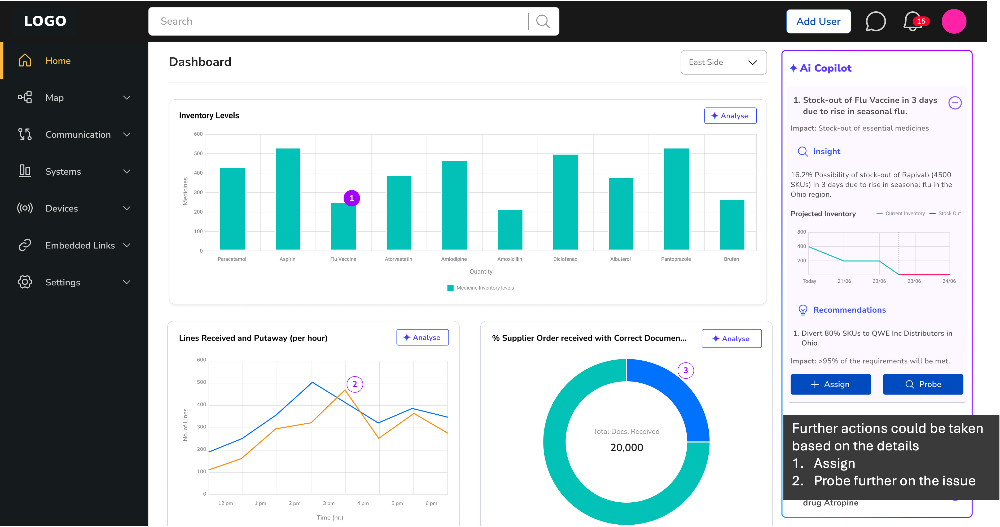
Design Parameters
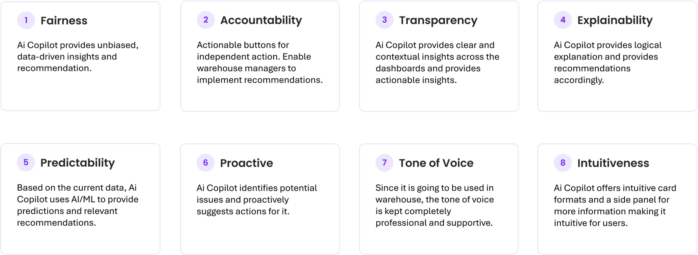
Use Case : Pharmaceutical
- Ryan opens the Control Tower dashboard to review overall warehouse and inventory trends.
- He monitors key data points such as inventory levels, inbound and outbound shipments, and compliance status.
- An alert appears on the Analyze Card, flagging a potential stock-out risk over the next three days due to rising demand.
- Ryan investigates the alert to understand the root cause and projected timeline of the issue.
- The system predicts increased demand driven by the flu season, impacting the period from 4th July to 8th July, 2023.
- The analysis highlights a high risk of stock-out for essential medicines during this window.
- A Recommendation Card suggests corrective actions, including diverting 80% of SKUs to a specific distributor.
- The system also shows the predicted impact, indicating that 95% of demand can be met, while warning that remaining stock will require replenishment.